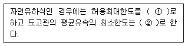
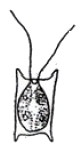
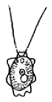
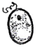
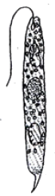
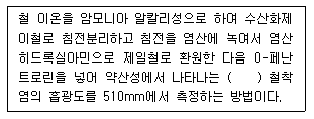
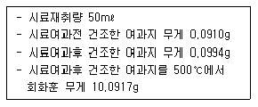
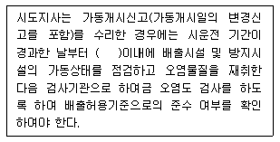
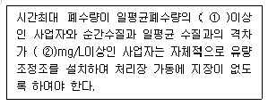

수질환경기사 (2007-03-04 기출문제)
1과목: 수질오염개론
1. 20℃ 5일 BOD가 500mg/L인 하수의 1일 BOD는? (단, 반응계수 k1=0.23/day, base는 e이다.)
- 약 130 mg/L
- 약 150 mg/L
- 약 170 mg/L
- 약 190 mg/L
(정답률: 60%)

2. 다음 중 지하수의 특성을 설명한 것 중 틀린 것은?
- 광물질이 용해되어 경도와 탁도가 높다.
- 년중 수온의 변동이 적고 염분함량이 지표수보다 높다.
- 유량변화가 적고 자정작용이 느리다.
- 수질은 국지적인 환경조건의 영향을 크게 받는다.
(정답률: 53%)
3. 트리할로메탄에 관한 설명으로 틀린 것은?
- 부식질계 유기물과 염소소독 후 잔류하는 유리염소가 반응하여 생성된다.
- pH가 높을수록 생성량이 증가한다.
- 온도가 높을수록 생성량이 증가한다.
- 대부분 클로로에탄으로 존재한다.
(정답률: 10%)
4. 다음은 이상적인 마개흐름(plug fiow) 상태에서 혼합 정도에 대한 설명이다. 옳은 것은?
- 분산(variance)=1
- 분산수(dispersion number)=0
- 지체시간(lag time)
- Morrill 지수=0
(정답률: 60%)
5. 하천수질에 영향을 주는 각종 환경요인을 고려하여 수학적인 형태로 표현된 식을 적용, 장래 수질의 예측 등을 할 수 있는 모델중 Streeter-Phelps Model에 관한 설명으로 틀린 것은?
- 점오염원으로부터 오염부하량 고려
- 최초의 하천 수질 모델링
- 유기물 분해로 인한 용존산소소비와 대기로부터 수면을 통해 산소가 재공급되는 재폭기 고려
- 부영양화를 고려한 생태적 모델
(정답률: 54%)
6. 산소포화농도가 9mg/ℓ인 하천에서 t=0 일 때 용존산소 농도가 7mg/ℓ라면 3일간 흐른 후 하천 하류지점에서의 용존산소 농도(mg/ℓ)는? (단, BODu=10mg/ℓ, 탈산소계수:0.1day-1, 재폭기계수:0.2day-1, 상용대수기준)
- 4.5
- 5.0
- 5.5
- 6.0
(정답률: 22%)
7. 1차반응에 있어 반응 초기의 농도가 100 mg/L이고, 4시간후에 10mg/L로 감소되었다. 반응 3시간 후의 농도(mg/L)로 알맞은 것은?
- 17.8
- 24.8
- 31.6
- 36.8
(정답률: 50%)
8. Mg(OH)2 232 mg/L 용액의 pH는? (단, Mg(OH)2는 완전해리 하며 M.W = 58)
- 11.1
- 11.4
- 11.6
- 11.9
(정답률: 40%)
9. 초산의 이온화 상수는 20℃에서 1.75×10-5이다. 20℃에서 0.1M 초산 용액의 pH는? (단, 완전해리 기준)
- 약 2.3
- 약 2.5
- 약 2.7
- 약 2.9
(정답률: 23%)
10. 미생물 영양원 중 유황(sulfur)에 관한 설명으로 틀린 것은?
- 미생물이나 식물의 생장을 제한하는 경우는 거의 없다.
- 유황을 함유한 아미노산은 세포 단백질의 필수 구성원이다.
- 미생물세포에서 탄소 대 유황의 비는 100:1 정도이다.
- 유황고정, 유황화합물 산화, 환원으로 순으로 변환된다.
(정답률: 36%)
11. BOD5=300mg/ℓ이고 COD=500mg/ℓ인 경우 생물학적으로 분해 불가능한 COD는? (단, 상요대수적용, K1=0.2/day)
- 124mg/ℓ
- 136mg/ℓ
- 167mg/ℓ
- 184mg/ℓ
(정답률: 67%)
12. 2000m3인 탱크에 염소이온 농도가 250mg/L이다. 탱크내의 물은 완전혼합이며, 계속적으로 염소이온이 없는 물이 20m3/hr로 유입될 때 염소이온 농도가 2.5mg/L로 낮아질 때까지의 소요시간(hr)은?
- 약 310
- 약 360
- 약 410
- 약 460
(정답률: 34%)
13. 수질오염물질 중 중금속인 카드뮴에 대한 설명으로 틀린 것은?
- 칼슘 대사기능장해로 칼슘의 손실, 체내 칼슘 불균형을 초래한다.
- 도금공정에서 주로 많이 사용되는 금속이다.
- 화학벅으로 요오드와 유사한 특성을 가진다.
- 대표적 질환으로 이따이이따이병이 있다.
(정답률: 28%)
14. 다음 수질을 가진 농업용수의 SAR값으로부터 Na+가 흙에 미치는 영향은 어떻다고 할 수 있는가? (단, 수질농도는 Na+=1,150mg/L, Ca2+=60mg/L, Mg2+=36mg/L, PO43-=1,500mg/L, Cl-=200mg/L이며 원자량은 Na:23, Mg:24.3, P:31, Ca:40)
- 영향이 작다.
- 영향이 중간 정도이다.
- 영향이 비교적 크다.
- 영향이 매우 크다.
(정답률: 48%)
15. 해수에서 영양염류가 수온이 낮은 곳에 많고 수온이 높은 지역에서 적은 이유로 틀린 것은?
- 수온이 낮은 바다의 표층수는 본래 영양염류가 풍부한 극지방의 심층수로부터 기원하기 때문이다.
- 수온이 높은 바다의 표틍수는 적도부근의 표층수로부터 기원하므로 영양염류가 결핍되어 있다.
- 수온이 낮은 바다는 겨울에도 표층수 냉각에 따른 밀도 변화가 적어 심층수로의 침강작용이 일어나지 않기 때문이다.
- 수온이 높은 바다는 수계의 안정으로 수직혼합이 일어나지 않아 표층수릐 영양염류가 플랑크톤에 의해 소비되기 때문이다.
(정답률: 59%)
16. 해수의 특징에 관한 설명으로 틀린 것은?
- 해수의 Ca/Mg 농도비는 3 - 4 정도로 담수에 비하여 매우 크다.
- 해수는 HCO3-를 포화시킨 상태로 되어 있다.
- 해수내 전체질소 중 35% 정도는 암모니아성 질소, 유기질소 형태이다.
- 해수는 강전해질로 1L 당 35g의 염분을 함유한다.
(정답률: 69%)
17. 다음은 산과 염기에 관한 설명이다. 틀린 것은?
- Lewis는 전자쌍을 받는 화학종을 산이라고 정의
- Arrhenius는 수용액에서 수산화이온을 내어놓는 것이 염기라고 정의
- Bronsted-Lowry는 양성자를 받는 분자나 이온을 산이라 정의
- 산은 활성을 띤 금속과 반응하여 원소상태의 수소를 내어 놓음
(정답률: 9%)
18. Ca2+의 농도가 5.24×10-4mol/ℓ인 용약내에서 존재할 수 있는 불소이온(F-)의 농도 (mol/ℓ)는? (단, CaF2의 용해도 적은 3.95×10-11이다.)
- 약 2.8×10-5
- 약 2.8×10-4
- 약 3.4×10-5
- 약 3.4×10-4
(정답률: 67%)
19. 다음은 물에 대한 설명이다. 틀린 것은?
- 고체 상태에서는 수소결합에 의해 육각형의 결정구조로 되어 있다.
- 기화열이 크기 때문에 생물의 효과적인 체온조절이 가능하다.
- 융해열이 작아 생물체 결빙의 원인이 된다.
- 광합성의 수소공여체이며 호흡의 최종산물이다.
(정답률: 48%)
20. Glucose(C6H12O6) 100mg/L인 용액이 있다. 혐기성 분해시 생산되는 이론적 메탄량(mg/L)은?
- 13.3
- 26.7
- 53.3
- 93.4
(정답률: 48%)
2과목: 상하수도계획
21. 내경 500mm의 강관 내압 1.0MPa으로 물이 흐르고 있다. 매설 강관의 최소 두께(mm)는? (단, 내압에 의한 원주방향의 응력도 110 N/mm2이다.)
- 2.27mm
- 4.52mm
- 6.54mm
- 9.08mm
(정답률: 0%)
22. 상수도 시설의 기본계획중 기본사항인 계획(목표)년도는?
- 계획수립시부터 10 - 15년간을 표준으로 한다.
- 계획수립시부터 15 - 20년간을 표준으로 한다.
- 계획수립시부터 20 - 25년간을 표준으로 한다.
- 계획수립시부터 25 - 30년간을 표준으로 한다.
(정답률: 36%)
23. 다음은 상수시설인 도수관을 설계할 때의 평균유속에 관한 내용이다. ( )안에 알맞은 내용은?

- ① 1m/sec ② 0.3m/sec
- ① 2m/sec ② 0.5m/sec
- ① 3m/sec ② 0.3m/sec
- ① 5m/sec ② 0.5m/sec
(정답률: 72%)
24. 정수시설중 후속되는 여과지의 부담을 경감시키기 위해 설치하는 고속응집침전지의 선택시 고려하여야 하는 조건으로 틀린 것은?
- 탁도와 수온의 변동이 적어야 한다.
- 원수 탁도는 100 NTU 이상이어야 한다.
- 최고 탁도는 1000 NTU 이하인 것이 바람직하다.
- 처리수량의 변동이 적어야 한다.
(정답률: 44%)
25. 펌프의 토출유량은 1800m3/hr, 흡입구의 유속은 2m/sec일 때 펌프의 흡입구경(mm)은?
- 약 512
- 약 528
- 약 542
- 약 566
(정답률: 36%)
26. 소규모하수도의 계획에 있어서 고려하여야 하는 소규모 고유의 특성에 관한 설명으로 틀린 것은?
- 일반적으로 건설비 및 유지관리비가 비싸게 되는 경향이 있다.
- 계획구역기 작고 생활방식이 유사하여 유입하수의 수량 및 수질의 변동이 적다.
- 슬러지의 발생량이 적고, 녹농지(삼림, 목초지, 공원등)가 많아, 하수슬러지의 녹농지이용이 쉽다.
- 하수도 운영에 있어서 지역주민과 밀접한 관련을 갖는다/
(정답률: 25%)
27. 표준활성슬러지법의 심층식 포기조 유효수심 및 여유고 표준은 각각 얼마인가?
- 유효수심: 10m, 여유고: 100cm 정도
- 유효수심: 20m, 여유고: 200cm 정도
- 유효수심: 30m, 여유고: 300cm 정도
- 유효수심: 40m, 여유고: 400cm 정도
(정답률: 24%)
28. 정수시 처리대상물질이 침식성 유리탄산(무기물, 용해성성분)인 경우 처리방법으로 가장 적절한 것은?
- 응집침전, 탄산가스처리
- 정석연화, 응석침전
- 응집침전, 활성탄
- 알칼리제 처리, 폭기
(정답률: 38%)
29. 계획우수량을 정하기 위하여 고려하여야 하는 사항 중 확률년수는 원칙적으로 몇 년으로 하는가?
- 3 - 5 년
- 5 - 10 년
- 10 - 20 년
- 20 - 30 년
(정답률: 28%)
30. 슬러지 소화가스의 포집과 저장 시설을 정할 때 고려하여야 할 사항으로 틀린 것은?
- 가스포집관은 내경 100 - 300mm 정도로 한다.
- 하루에 발생하는 가스부피의 1/2 정도를 저장할 수 있는 용량의 가스저장소를 설치한다.
- 탈질장치를 설치한다.
- 슬러지 소화조 지붕의 가스돔 및 가스포집관에 안전 장치를 설치한다.
(정답률: 25%)
31. 지하수(복류수 포함)의 취수시설인 집수매거에 관한 설멸중 옳지 않은 것은?
- 취수량의 대소: 일반적으로 중량 취수에 이용된다.
- 하천의 유황: 유황의 영향이 크다.
- 지질조건: 투수성이 큰 하천바닥에 적합하다.
- 기상조건: 일반적으로 영향이 적다.
(정답률: 31%)
32. 수도관의 관종 중 강관의 단점이 아닌 것은?
- 가공성이 나쁘다(약하다).
- 전식에 대하여 고려해야 한다.
- 내외의 방식면이 손상되면 부식되기 쉽다.
- 용접이음은 숙련공이나 특수한 공구를 필요로 한다.
(정답률: 36%)
33. 정수시설인 착수정의 용량기준으로 적절한 것은?
- 체류시간: 0.5분 이상, 수심: 2 - 4m 정도
- 체류시간: 1.0분 이상, 수심: 2 - 4m 정도
- 체류시간: 1.5분 이상, 수심: 3 - 5m 정도
- 체류시간: 2.0분 이상, 수심: 3 - 5m 정도
(정답률: 69%)
34. 상수시설인 침사지 구조에 관한 설명으로 틀린 것은?
- 표면 부하율은 500 - 800mm/min을 표준으로 한다.
- 지내평균유속은 2 - 7cm/sec를 표준으로 한다.
- 지의 길이는 폭의 3 - 8배를 표준으로 한다.
- 지의 상단높이는 고수위보다 0.6 - 1m의 여유고를 둔다.
(정답률: 43%)
35. 하수 고도처리(잔류 SS 및 잔류 용존유기물 제거)방법인 막 분리법에 적용디는 분리막 모듈 형식과 가장 거리가 먼 것은?
- 중공사형
- 투사형
- 관형
- 나선형
(정답률: 40%)
36. 생물막을 이용한 처리방식의 하나인 접촉산화법을 적용하여 오수를 처리할 때 반응조내 오수의 교반과 용존산소유지를 위한 송풍량에 관한 내용으로 맞는 것은?
- 접촉재를 전면에 설치하는 경우, 계획오수량에 대하여 2배를 표준으로 한다.
- 접촉재를 전면에 설치하는 경우, 계획오수량에 대하여 4배를 표준으로 한다.
- 접촉재를 전면에 설치하는 경우, 계획오수량에 대하여 6배를 표준으로 한다.
- 접촉재를 전면에 설치하는 경우, 계획오수량에 대하여 8배를 표준으로 한다.
(정답률: 42%)
37. 다음은 하수슬러지 소각을 위한 주요 소각로이다. 건설비가 가장 큰 것은?
- 다단소각로
- 유동층소각로
- 기류건조소각로
- 회전소각로
(정답률: 40%)
38. 하수의 배제방식인 합류식, 분류식을 비교한 내용으로 틀린 것은?
- 관거오접: 분류식의 경우 철저한 감시가 필요하다.
- 관거내 퇴적: 분류식의 경우 관거내의 퇴적이 적으나 수세효과는 기대할 수 없다.
- 처리장으로의 토사유입: 분류식의 경우 토사의 유입은 있으나 합류식 정도는 아니다.
- 관거내의 보수: 분류식의 경우 측구가 있는 경우는 관리시간이 단축되고 충분한 관리가 가능하다.
(정답률: 47%)
39. 계획오수량에 관한 설명 중 틀린 것은?
- 계획시간 최대오수량은 계획 1일 최대오수량의 1시간당 수량의 1.3~1.8배를 표준으로 한다.
- 지하수량은 1인 1일 최대 오수량의 10~20%로 한다.
- 합류식의 우천시 계획오수량은 원칙적으로 계획 1일 최대오수량의 3배 이상으로 한다.
- 계획 1일 평균 오수량은 계획 1일 최대 오수량의 70~80%를 표준으로 한다.
(정답률: 42%)
40. 펌프의 회전수 n=2400rpm, 최고 효율점의 토출량 Q=162m3/hr, 전양정 H=90m인 원심펌프의 비회전도는?
- 약 115
- 약 125
- 약 135
- 약 145
(정답률: 37%)
3과목: 수질오염방지기술
41. 비소(As)함유 폐수처리 방법으로 가장 효과적인 것은?
- 아말감법
- 황화물 침전법
- 수산화물 공침법
- 알칼리 염소법
(정답률: 15%)
42. 하수 고도처리 도입이유와 가장 거리가 먼 것은?
- 개방형 수역의 부영양화 방지
- 방류수역의 수질환경기준의 달성
- 방류수역의 이용도 향상
- 처리수의 재이용
(정답률: 8%)
43. 담수에 서식하는 유글레나(Euglena)는 다음 중 어느 것인가?




(정답률: 40%)
44. 1000m3의 폐수중에서 SS농도가 210mg/ℓ일 때 처리효율 70%인 처리장에서 발생하는 슬러지의 양은? (단, 처리된 SS량과 발생슬러지량은 같다고 가정함, 슬러지 비중: 1.03, 함수율 94%)
- 약 2.4 m3
- 약 3.8 m3
- 약 4.2 m3
- 약 5.1 m3
(정답률: 14%)
45. 1차 침전지에서 유출된 물의 BOD는 150m3/day의 flow rate를 가진 곳에서 120 mg/L이다. 포기조의 크기가 2m×2m×4.5m이고 MLSS가 2000mg/L일 때 F/M비는?
- 0.2 kg BOD/kg MLSS-day
- 0.3 kg BOD/kg MLSS-day
- 0.4 kg BOD/kg MLSS-day
- 0.5 kg BOD/kg MLSS-day
(정답률: 59%)
46. 현재 10℃로 운전되는 역삼투 장치로 하루에 760,000L의 3차 처리된 유출수를 탈염시키고자 한다. 요구되는 막면적은? (단, 25℃에서 물질전달계수=0.2068 L/(day-m2)(kPa), 유입수아 유출수 ㅏ이의 압력차=2400 kPa, 유입수와 유출수의 삼투압차=310kPa 최저 운전온도=10℃, A10=1.6A25)
- 약 2633m2
- 약 2721m2
- 약 2814m2
- 약 2963m2
(정답률: 56%)
47. 분뇨의 소화슬러지 발생량은 1일 분뇨투입량의 10%이다. 발생된 소화슬러지의 탈수전 함수율이 96%라고 하면 탈수된 소화슬러지 1일 발생량은? (단, 분뇨투입량은 120kL/day이며 탈수된 소화 슬러지의 함수율은 72%이다. 분뇨 비중은 1.0 기준임)
- 1.472m3
- 1.714m3
- 2.115m3
- 2.372m3
(정답률: 25%)
48. 약분리법의 영향인자에 관한 걸명으로 틀린 것은?
- 막 충전밀도: 압력 용기 단위부피 중에 설치할 수 있는 막 표면적을 나타낸다.
- 플럭스: 조작 시간이 길어질수록 증가하여 1 - 2년 후에는 10 - 15%가 증가된다.
- 염 배제율: 막의 성질과 염의 농도구배에 따라 달라지는데 일반적으로 85 - 99.5%의 값을 얻을 수 있다.
- 회수율: 실제 장치 능력을 나타내는 것으로 대개는 75 - 95% 범위이며 실질적 최대치는 80% 정도이다.
(정답률: 13%)
49. MLSS농도 1500mg/L의 혼합약을 1000mL 메스실린더에 취해 30분단 정치했을 때의 침강 슬러지가 차지하는 용적이 110mL였다면 이 슬러지의 SDI는?
- 0.68
- 1.36
- 1.79
- 2.89
(정답률: 54%)
50. 하수처리시 적용되는 오존 소독의 장단점으로 틀린 것은?
- 유기화합물의 생분해성을 높인다.
- 슬러지가 생기지 않는다.
- 효과에 지속성이 없다.
- 철 및 망간의 제거능력이 작다.
(정답률: 55%)
51. 5단계 Bardenpho 공법에 관한 설명으로 틀린 것은?
- 슬러지 생샌량은 적으나 비교적 큰 규모의 반응조가 요구된다.
- 무산소조에서 호기조로의 내부반송으로 탈질효율을 높인다.
- 효과적인 인제거응 위해서는 혐기조에 질산성 질소가 유입되지 않아야 한다.
- 인제거는 과잉의 인을 섭취한 슬러지를 폐기함으로서 이루어 진다.
(정답률: 54%)
52. 활성슬러지 공법을 이용한 폐수처리장에서 반송슬러지 농도가 10000mg/L이고, 폭기조에 MLSS 농도를 3000mg/L로 유지시키고자 한다면 슬러지반송률(%)은?
- 약 13%
- 약 23%
- 약 33%
- 약 43%
(정답률: 47%)
53. 질산염(NO3-) 10mg/L를 탈질시키는데 소모되는 메탄올(CH3OH)의 양은?
- 4.3 mg/L
- 6.9 mg/L
- 8.2 mg/L
- 10.6 mg/L
(정답률: 19%)
54. 급속 모래여과를 운전할 때 나타나는 문제점이라 할 수 없는 것은?
- 진흙 덩어리(mudball)의 축적
- 여재의 층상구조 형성
- 여과상의 수축
- 공기 결합(air binding)
(정답률: 46%)
55. 유량이 3,000m3/일이고 BOD농도가 400mg/ℓ인 폐수를 활성슬러지법으로 처리하고 있다. 포기사간을 8시간으로 처리한 결과 처리수의 BOD 및 SS 농도가 각각 30mg/ℓ이었다. MLSS농도는 4,000mg/ℓ이었으며, 폐슬러지 생산량은 50m3/일 이었다. 폐슬러지 농도는 0.9%이며, 세표증식계수가 0.6인 경우 내호흡율(Kd)은?
- 약 0.032/일
- 약 0.042/일
- 약 0.⑤2/일
- 약 0.062/일
(정답률: 10%)
56. 펜턴 산화법에 관한 설명으로 틀린 것은?
- 펜턴 산화반응에서 철은 촉매로 작용한다.
- COD는 감소되지만 BOD는 증가하는 경우가 있다.
- 철염을 이용하므로 수산화철의 슬러지가 다량 생성될 수 있다.
- 펜턴시약 주입 후 pH를 3-4로 조절하여야 한다.
(정답률: 20%)
57. 100mg/L의 에탄올(C2H5OH)만을 함유하는 10000m3/day의 공장폐수를 재래식 활성슬러지 공법으로 처리할 경우, 적절한 처리를 위하여 요구되는 영양염류(질소, 인)의 첨가량(kg/day)은 약 얼마인가? (단, 에탄올 생물학적으로 100% 분해되며, BOD:N:P=100:5:1 이다.)
- 질소-80, 인-16
- 질소-95, 인-19
- 질소-1⑤, 인-21
- 질소-115, 인-23
(정답률: 알수없음)
58. 산화구법에 관한 설명으로 틀린 것은?
- 저부하에서 운전되므로 유입하수량, 수질의 시간변동이 있어도 안정된 유기물 제거를 기대할 수 있다.
- SRT가 길어 질산화 반응이 진행되므로 무산소 조건을 적절히 만들면 70% 정도의 질소제거가 가능하다.
- 슬러지 발생량은 유입 SS량당 대략 25% 정도로 표준 활성슬러지법에 비하여 매우 작다.
- 산화구내의 혼합상태에 따른 용존산소농도는 흐름의 방향에 따라 농도구배가 발생하지만 MLSS농도, 알칼리도는 구내에서 균일하다.
(정답률: 16%)
59. 암모니아성 질소의 농도가 200mg/L인 폐수의 완전 질산화에 필요한 이론적 산소요구량(mg/L)은?
- 약 814
- 약 914
- 약 1014
- 약 1114
(정답률: 25%)
60. 평균 유량 6,000m3/day인 도시하수처리장의 1차침전지를 설계하고자 한다. 1차침전지의 표면부하율을 40m3/m2-day로 하여 원형침전지를 성계한다면 침전지의 직경은?
- 13.8m
- 15.2m
- 17.3m
- 18.8m
(정답률: 29%)
4과목: 수질오염공정시험기준
61. 총질소의 정량시 비교적 분해되기 쉬운 유기물을 함유한 시료나 시료량이 소량일 경우로서 총질소 농도가 낮은 시료는 시료중 질소화합물을 질산이온으로 산화시킨 다음 그 질산이온을 아질산이온으로 환원시켜 아질산성질소의 양을 구하여 질소로 환산하는 방법을 적용한다. 질산이온을 아질산이온으로 환원시킬 때 사용하는 환원 컬럼은?
- 카드뮴-구리 환원 컬럼
- 카드뮴-주석 환원 컬럼
- 황산칼륨-크롬 환원 컬럼
- 알루미나-크롬 환원 컬럼
(정답률: 50%)
62. 인산염인을 염화제일주석 환원법으로 측정하고자 한다. 측정원리가 맞는 것은?
- 인산이온이 올리브덴산 암모늄과 반응하여 생성된 올리브덴산인 암모늄을 염화제일주석으로 환원하여 생성된 올리브덴 청의 흡광도를 410nm에서 측정한다.
- 인산이온이 올리브덴산 암모늄과 반응하여 생성된 올리브덴산인 암모늄을 염화제일주석으로 환원하여 생성된 올리브덴 청의 흡광도를 690nm에서 측정한다.
- 인산이온이 아스코르빈산과 반응하여 생성된 아스코르빈산인 암모늄을 염화제일주석으로 환원하여 생성된 아스코르빈산 청의 흡광도를 410nm에서 측정한다.
- 인산이온이 아스코르빈산과 반응하여 생성된 아스코르빈산인 암모늄을 염화제일주석으로 환원하여 생성된 아스코르빈산 청의 흡광도를 690nm에서 측정한다.
(정답률: 37%)
63. 가스크로마토그라피(Gas Chromatography)에 사용되는 검출기(Detector)중 유기질소화합물 및 유기염소화합물을 선택적으로 검출할 수 있는 것은?
- FTD
- MD
- TCD
- FPD
(정답률: 9%)
64. 음이온계면활성제 측정에 관한 설명으로 틀린 것은?
- 메틸렌블루우법을 적용하여 측정한다.
- 주로 철, 아연이 함유한 시료인 경우에 측정에 방해를 주므로 주의가 필요하다.
- 흡광도를 650nm에서 측정하는 방법이다.
- 청색의 복합체를 클로로포름으로 추출하여 클로로포름층의 흡광도를 측정한다.
(정답률: 41%)
65. 다음은 흡광광도법을 적용한 철 측정에 관한 내용이다. ( )안에 알맞은 내용은?

- 황갈색
- 등적색
- 청록색
- 적갈색
(정답률: 10%)
66. 지하수 시료는 취수정 내에 고여있는 물과 원래 지하수의 성상이 달라질 수 있으므로 고여있는 물을 충분히 퍼낸 다음 새로나온 물을 채취한다. 이 경우 퍼내는 양은?
- 고여 있는 물의 절반 정도
- 고여 있는 물의 전체량 정도
- 고여 있는 물의 2-3배 정도
- 고여 있는 물의 4-5배 정도
(정답률: 27%)
67. 수은의 환원기화법에 의한 원자흡광 광도법 측정에 관한 설명 중 옳지 않은 것은?
- 수은중공음극램프를 사용한다.
- 환원기화 장치가 밀폐식인 경우 과망간산칼륨으로 장치 내부를 세정, 치환시킨다.
- 원자흡광분석장치는 석영제 흡수셀이 부착된 것을 사용한다.
- 시료에 염화제일주석을 넣어 금속수은으로 환원시킨다음 이용액에 통기하여 발생되는 수은증기를 원자흡광광도법에 따라 정량하는 방법이다.
(정답률: 0%)
68. ICP발광광도 분석장치의 각 부분에 관한 설명으로 틀린 것은?
- 시료주입부 : 시료용액을 흡입하여 에어로졸 상태로 플라스마에 도입시키는 부분이다.
- 고주파 전원부 : 유기용매의 경우 보통 1~1.5kw가 사용된다.
- 분광부 및 측광부 : 플라스마광원으로부터 발광하는 스펙트럼선을 선택적으로 분리하기 위해서 분해성능이 우수한 회절격자가 많이 사용된다.
- 분광부 및 측광부 : 분광기는 그 기능에 따라 단색화 분광기와 다색화분광기로 구분된다.
(정답률: 48%)
69. 흡광광도법으로 아연을 정량할 때 최적의 pH 발색범위는?
- pH 4.8 ~ 6.2
- pH 6.6 ~ 7.2
- pH 8.8 ~ 9.2
- pH 9.8 ~ 10.2
(정답률: 38%)
70. 흡광광도법을 이용한 페놀류 측정원리는 증류한 시료에 [염화암모늄-암모니아 완충액을 넣어 pH(①)으로 조절한 다음 4-아미노안티피린과 (②)을 넣어 생성되는 (③)의 안티피린계 색조의 흡광도를 측정] 하는 방법이다. ( )안에 알맞은 것은?
- 10 - 페리시안칼륨 - 적색
- 10 - 페리시안나트륨 - 청색
- 12 - 페리시안칼륨 - 적색
- 12 - 페리시안나트륨 - 청색
(정답률: 50%)
71. 수질측정항목과 시료 최대보존기간이 잘못 연결된 것은?
- 생물화학적산소요구량 - 48시간
- 불소 - 28일
- 6가크롬 - 1개월
- 분원성대장균군 - 24시간
(정답률: 63%)
72. 어느 공장폐수의 SS를 측정하고자 실험한 결과가 다음과 같았다. 이 공장폐수의 SS는?

- 약 110 mg/ℓ
- 약 125 mg/ℓ
- 약 170 mg/ℓ
- 약 195 mg/ℓ
(정답률: 34%)
73. 수질오염공정시험방법 총칙을 설명한 것 중 틀린 것은?
- 분석용 저울은 0.1mg까지 달 수 있는 것이어야 한다.
- 유효측정 농도는 지정된 시험방법에 따라 시험하였을 경우 그 시험방법에 대한 최소 정량 한계를 의미하며, 그 미만은 불검출된 것으로 간주한다.
- 정량범위라 함은 본 시험방법에 따라 시험할 경우 표준편차율 5% 이하에서 측정할 수 있는 정량하한과 정량상한의 범위를 말한다.
- 표준편차율이라 함은 표준편차를 평균값으로 나눈값의 백분율이다.
(정답률: 37%)
74. 다음은 이온 전극법에 대한 내용이다. 잘못된 것은?
- 시료중의 분석대상 이온의 농도에 강응하여 비교전극과 이온전극간에 나타나는 전위차를 이용하여 목적이온의 농도를 정량하는 방법이다.
- 나트륨이온을 측정할 때는 유리막 이온전극을 사용한다.
- 이온농도의 측정범위는 일반적으로 10-1mol/L~10-4mol/L(또는 10-7mol/L)이다.
- 측정용액의 온도가 10℃ 상승하면 전위구배는 1가 이온이 약 mV, 2가 이온이 약 mV 변화한다.
(정답률: 28%)
75. 다음 pH 표준액 중 pH 값이 0℃에서 제일 높은(큰) 값을 나타내는 표준액은?
- 프탈산염 표준액
- 수산염 표준액
- 탄산염 표준액
- 붕산염 표준액
(정답률: 알수없음)
76. 투명도 측정에 관한 설명으로 적절치 못한 것은?
- 투명도판을 천천히 글어 올리면서 보이기 시작한 깊이를 1.0m 단위로 읽어 투명도를 측정한다.
- 투명도판은 무게가 약 3kg인 지름 30cm의 백색 원판에 지름 5cm의 구멍 8개가 뚫려 있다.
- 흐름이 있어 줄이 기울어질 경우에는 2kg 정도의 추를 달아서 줄을 세워야 한다.
- 투명도판의 색조차는 투명도에 미치는 영향이 적지만 원판의 광 반사능도 투명도에 영향을 미치므로 표면이 더러울 때에는 다시 색칠하여야 한다.
(정답률: 36%)
77. 시료의 보존처리방법에 관한 설명 중 틀린 것은?
- 시안화합물 검정용 시료는 NaOH로 pH 12 이상으로 조절: 4℃에서 보관한다. (잔류염소가 공존할 경우 아스코르빈산 1g/L 첨가)
- 유기인 검정용 시료는 HCl로 pH 5-9로 조절, 4℃에서 보관한다.
- 6가 크롬 검정용 시료는 4℃에서 보관한다.
- PCB 검정용시료는 HNO3를 2mL/L 가하여 4℃에서 보관한다.
(정답률: 45%)
78. 수질오염물질의 농도표시 방법에 대한 설명으로 적절치 않는 것은?
- 백만분율을 표시할 때는 ppm 또는 mg/ℓ의 기호를 쓴다.
- 십억분율을 표시할 때는 μg/m3 또는 ppb의 기호를 쓴다.
- 용액의 농도를 ‘%’로만 표시할 때는 W/V%를 말한다.
- 십억분율은 1ppm의 1/1000 이다.
(정답률: 18%)
79. 공정시험방법상 질산성질소의 측정방법과 가장 거리가 먼 것은?
- 가스크로마토그래피법
- 자외선 흡광광도법
- 데발다랍금 환원증류법
- 흡광광도법(부루신법)
(정답률: 15%)
80. 흡광광도법으로 폐수 중 크롬을 분석할 때 사용하지 않는 시약은?
- 과망간산칼륨
- 요소
- 황산제일철암모늄
- 아질산나트륨
(정답률: 22%)
5과목: 수질환경관계법규
81. 개선명령을 받지 않은 사업자가 배출허용기준을 초과하여 오염물질을 배출하게 될 때 환경부장관에게 제출하는 개선계획서에 기재할 사항과 가장 거리가 먼 것은?
- 개선사유
- 개선하려는 내용
- 개선기간 중의 오염물질 예상배출량 및 배출농도
- 개선후 배출시설의 오염물질 저감량 및 저감효과
(정답률: 47%)
82. 초과부과금 산정시 적용되는 위반횟수별 부과계숭 관한 내용으로 맞는 것은? (단, 폐수무방류배출시설에 대한 위반횟수별 부과계수)
- 처음 위반의 경우 1.5 다음 위반부터는 그 위반직전의 부과계수에 1.3 를 곱한 것으로 한다.
- 처음 위반의 경우 1.5 다음 위반부터는 그 위반직전의 부과계수에 1.5 를 곱한 것으로 한다.
- 처음 위반의 경우 1.8 다음 위반부터는 그 위반직전의 부과계수에 1.3 를 곱한 것으로 한다.
- 처음 위반의 경우 1.8 다음 위반부터는 그 위반직전의 부과계수에 1.5 를 곱한 것으로 한다.
(정답률: 50%)
83. 폐수처리업의 등록기준에 관한 설명과 가장 거리가 먼 것은?
- 각 시설장비 처리능력은 1일 8시간을 기준으로 한다.
- 하나의 시설 또는 장비가 2가지 이상의 기능을 가질 때에는 각각의 해당 시설 또는 장비를 갖춘 것으로 본다.
- 폐수수탁처리업 및 폐수재이용업을 함께 하려는 때는 동일한 요건을 중복하여 갖추지 아니할 수 있다.
- 측정대행업자와 계약 체결시에는 동일한 해당 실험기기등을 갖추어 측정 확인하여야 한다.
(정답률: 18%)
84. 수질오염 상태를 차악하기 위해 고시하는 측정망 설치계획에 포함되어야 하는 사항과 가장 거리가 먼 것은?
- 측정망 설치기간
- 측정망 설치시기
- 측정망 배치도
- 측정소를 설치할 토지 또는 건축물의 위치 및 면적
(정답률: 29%)
85. 사업장 규모를 결정하는 폐수방출량 산정시 포함되는 수량 항목은?
- 간접냉각수량
- 보일러용수량
- 공정 중 발생량
- 생활용수량
(정답률: 40%)
86. 다음은 시운전 기간등에 관한 설명이다. ( )안에 알맞은 내용은?

- 10일
- 15일
- 20일
- 30일
(정답률: 36%)
87. 수질오염경보(조류예보) 중 조류 경보시 유역 지방환경청장(시도지사)가 조치하여야 할 사항과 가장 거리가 먼 것은?
- 조류경보 발령 및 대중매체를 통한 홍보
- 수상스키, 수영, 낚시, 취사 등의 활동 금지
- 주변오염원에 대한 단속강화
- 어패류 어획, 식용 및 기축방목의 자제 권고
(정답률: 18%)
88. 공동방지시설을 설치하고자 하는 때에 사업자가 제출하여야 하는 서류와 가장 거리가 먼 것은? (단, 배출시설설치허가를 받지 않았고, 배출시설설치신고를 하지 않은 사업자의 경우)
- 사업장에서 공동방지시설에 이르는 배수관거 설치 도면 및 명세서
- 사업장별 원료사용량, 제품생산량에 관한 서류, 공정도 및 폐수 배출배관도
- 사업장별 배출시설의 설치명세서 및 오염물질 등의 배출량 예측서
- 사업장별 폐수배출량 및 오염물질농도 측정에 따른 배출부과금, 벌금 등에 대한 분담 명세서 내역
(정답률: 29%)
89. 오염물질 희석처리를 인정받을 수 있는 경우와 가장 거리가 먼 것은?
- 폐수의 염분이 높아 원래의 상태로는 생물화학적 처리가 어려운 경우
- 폐수의 유기물 농도가 높아 원래의 상태로는 생물화학적 처리가 어려운 경우
- 폭발의 위험이 있어 원래의 상태로는 화학적 처리가 어려운 경우
- 폐수의 부ㅜ유물질 농도가 높아 원래의 상태로는 화학적 처리가 어려운 경우
(정답률: 38%)
90. 폐수종말처리시설 종류병 배수설비의 설치방법 및 구조기준에 관한 내용이다. ( )안에 알맞은 것은?

- ① 2배, ② 100
- ① 2배, ② 200
- ① 3배, ② 100
- ① 3배, ② 200
(정답률: 7%)
91. 시.도지사등이 환경부장관에게 보고할 사항 중 보고 횟수가 연 1회에 해당되는 것은? (단, 위임업무 보고사항)
- 기타 수질오염원 현황
- 폐수위탁, 사업장 내 처리현황 및 처리실적
- 골프장 맹, 고독성 농약 사용 여부 확인 결과
- 비점오염원의 설치신고 및 현황
(정답률: 42%)
92. 수질오염방지시설 중 화학적처리시설이 아닌 것은?
- 침전물 개량시설
- 살균시설
- 흡착시설
- 응집시설
(정답률: 16%)
93. 다음 중 기타 수질오염원이 아닌 것은?
- 면적 2000m2인 자동차 폐차장 시설
- 용량 10m3인 조류 알 물세척 시설
- 면적 10만m2 인 골프장
- 5홀 인 골프장
(정답률: 알수없음)
94. 배출시설의 변경신고를 하여야 할 사항이 아닌 것은?
- 사업장의 공정이 변경된 경우
- 사업장의 명칭이 변경되는 경우
- 배출시설 또는 방지시설의 전부 또는 일부를 폐쇄하는 경우
- 배출시설 또는 방지시설을 임대하는 경우
(정답률: 7%)
95. 오염물질의 배출허용기준 중 ‘나’ 지역의 기준에 알맞은 것은?
- COD : 90mg/L 이하(1일 폐수배출량 2000m3미만)
- COD : 80mg/L 이하(1일 폐수배출량 2000m3미만)
- SS : 120mg/L 이하(1일 폐수배출량 2000m3미만)
- SS : 90mg/L 이하(1일 폐수배출량 2000m3미만)
(정답률: 50%)
96. 낚시금지구역 안에서 낚시행위를 한 자에 대한 벌칙 기준은?
- 200만원 이하의 과태료
- 200만원 이하의 벌금
- 00만원 이하의 과태료
- 1년 이하의 징역 또는 500만원 이하의 벌금
(정답률: 46%)
97. 폐수처리업의 등록을 한 자에 대한 영업정지가 공익에 현저한 지장을 초래 할 우려가 있다고 인정되는 경우에 영업정지처분에 갈음하여 부과되는 과징금의 최대 금액은?
- 5천만원
- 1억원
- 2억원
- 3억원
(정답률: 42%)
98. 특정수질유해물질이 아닌 것은?
- 클로로폼
- 벤젠
- 셀레늄 및 그 화합물
- 1.4-트리클로로메탄
(정답률: 20%)
99. 초과부과금을 부과시 적용되는 오염물질 1킬로그램당 부과 금액이 가장 적은 오염물질은?
- 크롬 및 그 화합물
- 페놀류
- 구리 및 그 화합물
- 트리클로로에틸렌
(정답률: 39%)
100. 환경부장관이 수질환경보전법의 목적을 달성하기 위하여 필요하다고 인정하는 때에 관계기관의 장에게 조치를 요청할 수 있는 사항이 아닌 것은?
- 농업용수의 사용규제
- 해충구제방법의 개선
- 수질오염원 등록규제
- 농약, 비료의 사용규제
(정답률: 18%)
1일 BOD = 500mg/L ÷ 5 = 100mg/L
하지만 이것은 아직 우리가 찾고 있는 정답이 아니다. 이것은 하수가 1일 동안 얼마나 빠르게 생물학적 산소를 요구하는지를 나타내는 것이지, 얼마나 빠르게 생물학적 산소가 제거되는지를 나타내는 것은 아니다.
생물학적 산소 요구량을 제거하는 속도는 반응계수 k1에 의해 결정된다. 따라서 우리는 다음과 같은 식을 사용하여 1일 동안 생물학적 산소가 제거되는 양을 계산할 수 있다.
BODt = BOD0e-k1t
여기서 BODt는 시간 t 후의 BOD, BOD0는 초기 BOD, k1은 반응계수, t는 시간이다.
우리는 BOD5가 500mg/L이라는 것을 알고 있으므로, BOD0는 500mg/L이다. 또한, 우리는 20℃에서 작업하므로, k1은 0.23/day이다. 따라서 우리는 다음과 같은 식을 얻을 수 있다.
BOD1 = 500mg/L × e-0.23×1 = 500mg/L × e-0.23 ≈ 150mg/L
따라서 정답은 "약 150 mg/L"이다.